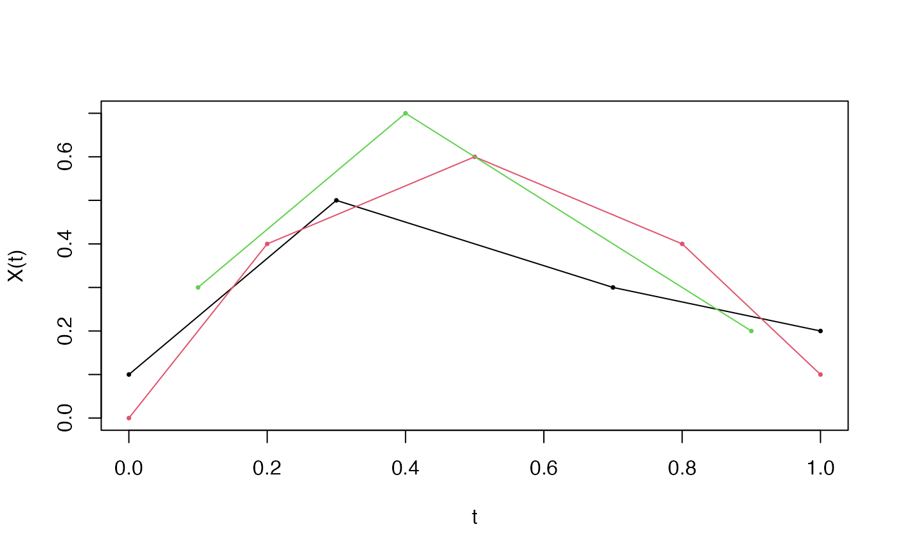

Creates an irregFdata object for functional data where each
observation is sampled at potentially different points. This is common
in longitudinal studies, sparse sampling, and sensor data with missing
values.
Arguments
- argvals
A list of numeric vectors, where
argvals[[i]]contains the observation times for the i-th curve.- X
A list of numeric vectors, where
X[[i]]contains the observed values for the i-th curve. Must have the same lengths as correspondingargvals[[i]].- rangeval
Optional numeric vector of length 2 specifying the domain range. If
NULL, computed from the union of all observation points.- names
List with components
main,xlab,ylabfor plot titles.- id
Optional character vector of identifiers for each observation.
- metadata
Optional data.frame with additional covariates (one row per observation).
Value
An object of class irregFdata containing:
- argvals
List of observation time vectors
- X
List of value vectors
- n
Number of observations
- rangeval
Domain range
- names
Plot labels
- id
Observation identifiers
- metadata
Additional covariates
Examples
# Create irregular functional data directly
argvals <- list(
c(0.0, 0.3, 0.7, 1.0),
c(0.0, 0.2, 0.5, 0.8, 1.0),
c(0.1, 0.4, 0.9)
)
X <- list(
c(0.1, 0.5, 0.3, 0.2),
c(0.0, 0.4, 0.6, 0.4, 0.1),
c(0.3, 0.7, 0.2)
)
ifd <- irregFdata(argvals, X)
print(ifd)
#> Irregular Functional Data Object
#> =================================
#> Number of observations: 3
#> Points per curve:
#> Min: 3
#> Median: 4
#> Max: 5
#> Total: 12
#> Domain: [ 0 , 1 ]
plot(ifd)
